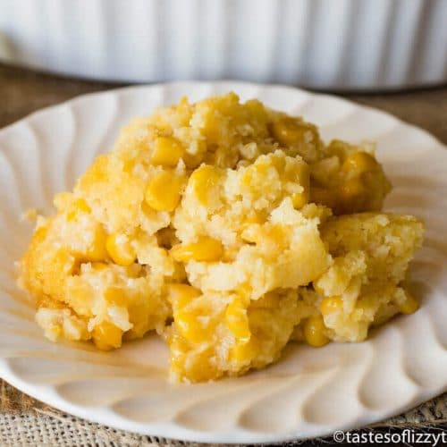

5 Ingredient Corn Casserole {Easy Jiffy Recipe}

Prep Time:
5 mins
Cook Time:
45 mins
Total Time:
50 mins
This 5 ingredient easy corn casserole recipe is versatile and bakes up into a savory side dish that will complement any meal.
- Course: Side Dish
- Cuisine: American
- Keyword: casserole recipe, corn pudding, corn side dish, easy corn recipe, easy thanksgiving dessert, jiffy corn mix
- Servings: 8
- Calories: 355 kcal
- Author: Julie Clark
Ingredients
- 8 oz Jiffy Corn Muffin Mix
- 15 oz whole kernel corn (drained)
- 15 oz creamed corn (not drained)
- 1/2 cup melted butter
Instructions
- Preheat the oven to 350 degrees.
- In a bowl, mix all of the ingredients together and pour into a greased 8"x8" baking pan.
- Cook uncovered for 45-50 minutes or until lightly browned.
Notes
Mix in 2 eggs....this creates jus a bit more of a lighter corn casserole. Add 1/2 to 1 cup shredded cheddar cheese....because cheese makes everything better, right? Add 1/4 cup to 1/2 cup sugar....this of course makes it a very sweet corn casserole. If you add the eggs and sugar, it almost tastes like a corn cake and could be eaten for dessert!